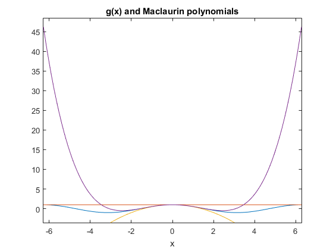
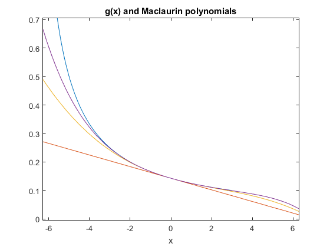
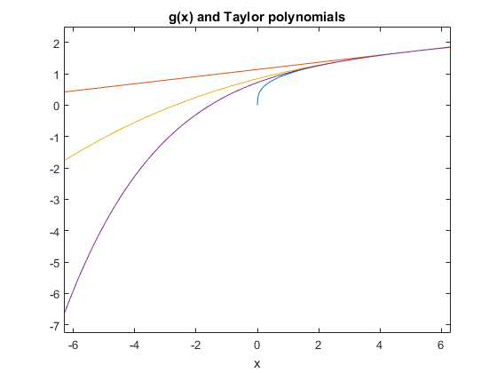
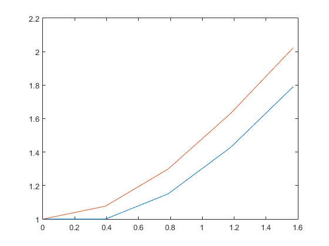
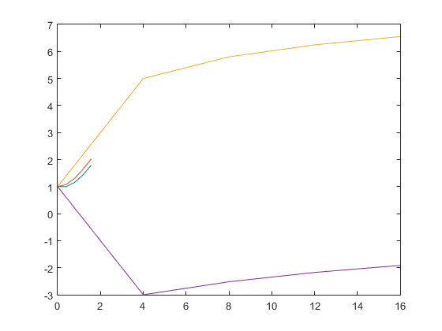

Exercises from Sec.8.1 - 8.2
학번 : 20141510 , 이름 : 김민우
Contents
1.1
clear clc syms x g = @(x) cos(x); ezplot(g); hold on for i = 2 : 2 : 6 taylorPoly = taylor(g, x, 0, 'Order', i); ezplot(taylorPoly); end title('g(x) and Maclaurin polynomials'); hold off
1.2
clear syms x g = @(x) 1./(x+7); ezplot(g); hold on for i = 2 : 2 : 6 taylorPoly = taylor(g, x, 0, 'Order', i); ezplot(taylorPoly); end title('g(x) and Maclaurin polynomials'); hold off
2.1
clear syms x g = @(x) x.^(1/3); ezplot(g); hold on for i = 2 : 2 : 6 taylorPoly = taylor(g, x, 5, 'Order', i); ezplot(taylorPoly); end title('g(x) and Taylor polynomials'); hold off
2.2
clear syms x g = @(x) sin(2*x) + x; ezplot(g); hold on for i = 2 : 2 : 6 taylorPoly = taylor(g, x, pi, 'Order', i); ezplot(taylorPoly); end title('g(x) and Taylor polynomials'); hold off
3.1
clear syms fEuler1 fEuler2 dfdt1 dfdt2 x tI = 0; tF = pi/2; dt = pi/8; fInitialValue = 1; times = tI:dt:tF; fEuler1(1) = fInitialValue; % first-order Euler method fEuler2(1) = fInitialValue; % second-order Euler method for i = 1:1:(length(times)-1) dfdt1(i) = sin(times(i)); dfdt2(i) = cos(times(i)); fEuler1(i+1) = fEuler1(i) + dfdt1(i) * dt; fEuler2(i+1) = fEuler2(i) + dfdt1(i) * dt + (1/2)*dfdt2(i)*(dt^2); end double(fEuler1(length(times))) % first order approximation of f(pi/2) double(fEuler2(length(times))) % second order approximation of f(pi/2) int('sin(x)',x,0,pi/2) + fInitialValue % exact value of f(pi/2) plot(times,fEuler1) hold on plot(times,fEuler2)
ans =
1.7908
ans =
2.0231
ans =
2
 3.2
clear syms fEuler1 fEuler2 dfdt1 dfdt2 x tI = 0; tF = 16; dt = 4; fInitialValue = 1; times = tI:dt:tF; fEuler1(1) = fInitialValue; % first-order Euler method fEuler2(1) = fInitialValue; % second-order Euler method for i = 1:1:(length(times)-1) dfdt1(i) = 1/(1+times(i)); dfdt2(i) = -1/(1+times(i))^2 ; fEuler1(i+1) = fEuler1(i) + dfdt1(i) * dt; fEuler2(i+1) = fEuler2(i) + dfdt1(i) * dt + (1/2)*dfdt2(i)*(dt^2); end double(fEuler1(length(times))) % first order approximation of f(16) double(fEuler2(length(times))) % second order approximation of f(16) double(int('1/(1+x)',x,0,16) + fInitialValue) % exact value of f(16) plot(times,fEuler1) hold on plot(times,fEuler2)
ans =
6.5521
ans =
-1.9140
ans =
3.8332
